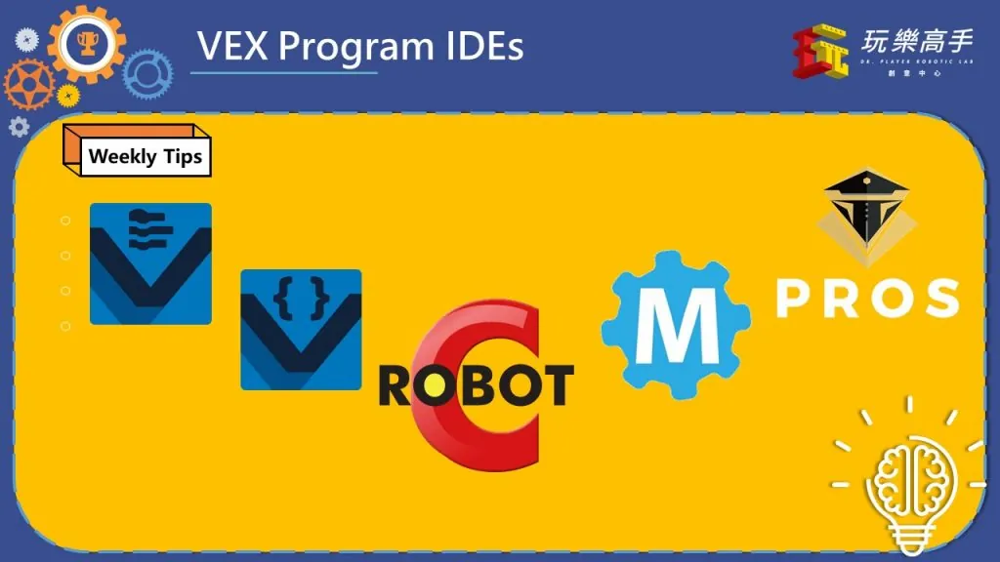
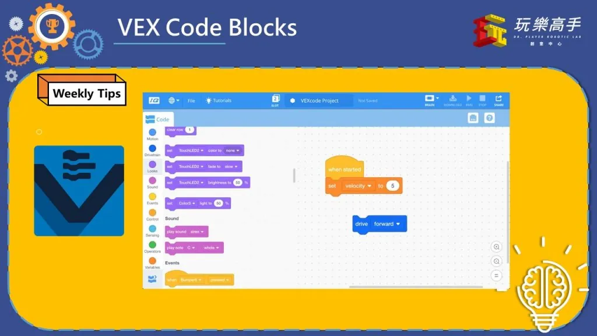
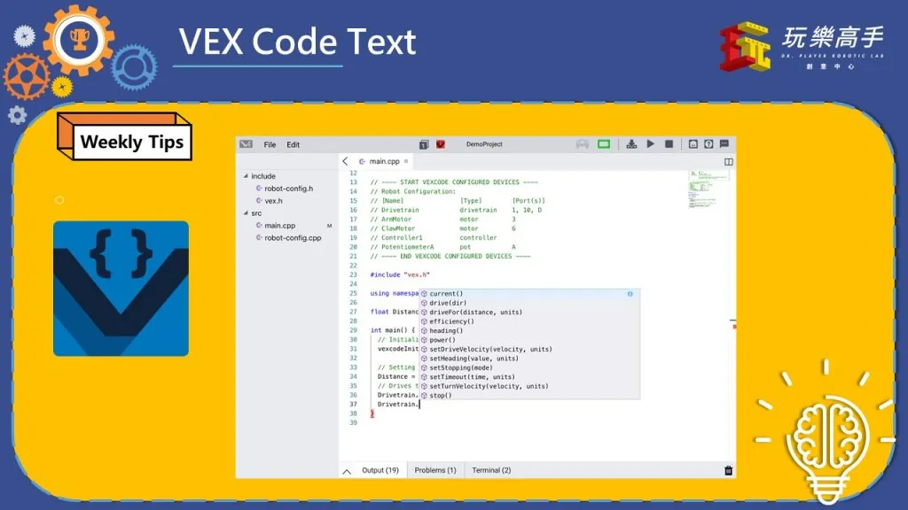
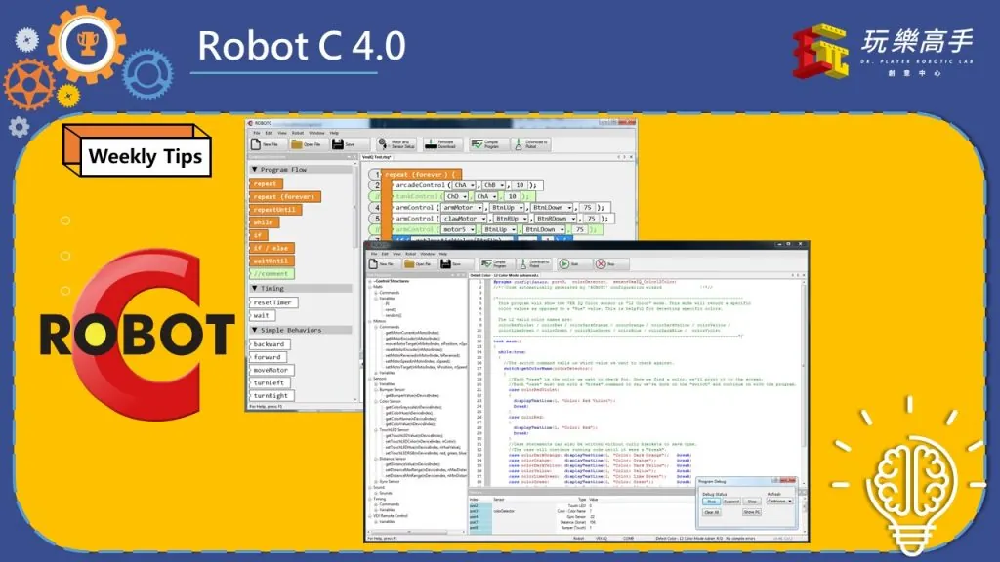
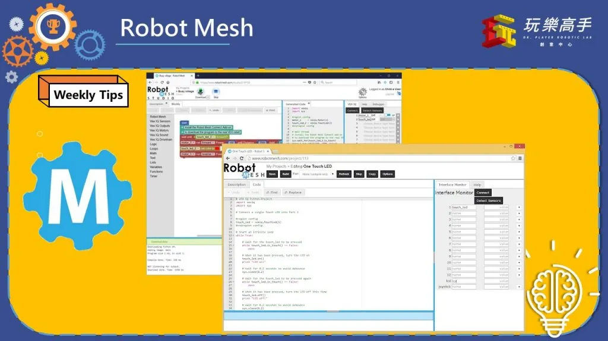
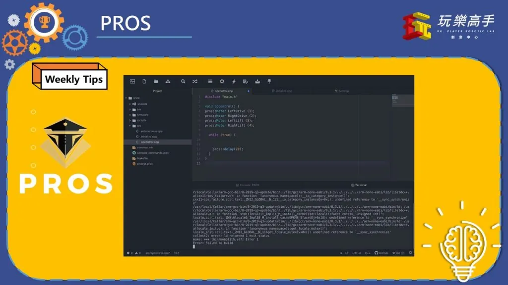
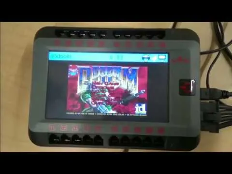
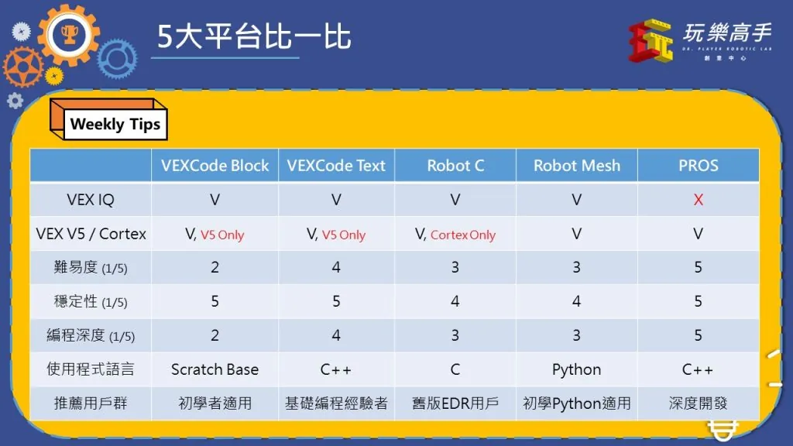

上周我們介紹了VEX系列的比賽，這周我們來看看VEX有哪些程式可以寫吧~

由左到右分別是VEXCode Text/Blocks、Robot C、Robot Mesh、PROS，分別為五大VEX編寫程式時常用的平台(其他諸如EasyC等非主流則不再此列舉)。

首先來看看VEX Code Blocks，他是VEX最新推出的程式平台，主要用來取代前一代Robot C，使用了Scratch為程式基礎，相當適合初學者使用。VEX V5與IQ皆可用。

接著是我們的VEX Code Text，主要取代前代VEX Coding Studio，使用了C++為基礎，貼近真正工程師會接觸的程式語言，適合有寫程式經驗的同學，另外他也允許加入自訂庫，相較於Block版，靈活度提升了不少。(目前僅限V5，IQ版的Text還未推出，預計今年夏天出現)
*你可能不知道：新版VEX Code與Lego SPIKE等等程式平台，幾乎都是採用Electron框架製作的，所以在某些地方看起來跟Google Chrome很像，事實上Electron便是使用Node.js和Chromium內核開發的，有利於廠商做跨平台應用程式。(當然介面會比傳統的程式好看XD)

接著是RobotC，主要是VEX Code出來前，比較主流的程式編寫平台，具有一定的歷史，使用者數量也很多，不過介面設計比較不人性，所以大部分使用者都改用VEX Code，另外他不支援V5，使用者便更少了。

Robot Mesh這個平台可能比較少同學聽過，他是基於網頁線上直接寫程式的，以Python為基礎，也有提供類似於App Inventor 2的圖形化介面，但是介面上比較陳舊一點，適合想學Python的朋友。

接著是五位選手中，最厲害的，P R O S ~~ 他也是基於C++的程式平台，不過相比VEX Code，他幾乎開放了所有進階功能，任何自行撰寫或是開源函式庫皆可加入，也提供諸如螢幕截圖等功能，本身他也是開源的，在VEX資深團隊中，PROS的使用者數量最多，但由於比較複雜，所以學習曲線較高，適合較資深的使用者使用。

你說V5 x PROS有多厲害，有人就通過PROS的開源與方便性，直接將DOOM移植上去了！！

總結時間
如果你是個新手完全沒摸過，那我們建議您先從VEX Code Blocks開始 (*/ω＼*)
如果你是想學文字式語言的入門玩家，那就從VEX Code Texts下手吧 (●’◡’●)
如果你是具有黑客精神的高端玩家，那PROS無疑是你的最佳選擇╰(*°▽°*)╯